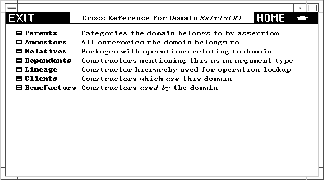
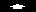

14.2 The Constructor Page¶
In this section we look in detail at a constructor page for domain Matrix. Enter matrix into the input area on the main Browse page and click on Constructors.

Constructor page for Matrix.
The header part tells you that Matrix has abbreviation MATRIX and one argument called R that must be a domain of category Ring. Just what domains can be arguments of Matrix? To find this out, click on the R on the second line of the heading. What you get is a table of all acceptable domain parameter values of R, or a table of rings in FriCAS.
Table of acceptable domain parameters to Matrix.
Click on  to return to the constructor page for Matrix.
If you have access to the source code of FriCAS, the third source code line of the heading gives you the name of the source file containing the definition of Matrix. Click on it to pop up an editor window containing the source code of Matrix.
Source code for Matrix.
We recommend that you leave the editor window up while working through this chapter as you occasionally may want to refer to it.
14.2.1 Constructor Page Buttons¶
We examine each button on this page in order.
14.2.1.1 Description¶
Click here to bring up a page with a brief description of constructor Matrix. If you have access to system source code, note that these comments can be found directly over the constructor definition.
Description page for Matrix.
14.2.1.2 Operations¶
Click here to get a table of operations exported by Matrix. You may wish to widen the window to have multiple columns as below.
Table of operations from Matrix.
If you click on an operation name, you bring up a description page for the operations. For a detailed description of these pages, skip to ugBrowseViewsOfOperations .
14.2.1.3 Attributes¶
Click here to get a table of the two attributes exported by Matrix: attribute finiteAggregate and shallowlyMutable. These are two computational properties that result from Matrix being regarded as a data structure.
Attributes from Matrix.
14.2.1.4 Examples¶
Click here to get an examples page with examples of operations to create and manipulate matrices.
Example page for Matrix.
Read through this section. Try selecting the various buttons. Notice that if you click on an operation name, such as newnewMatrix, you bring up a description page for that operation from Matrix.
Example pages have several examples of FriCAS commands. Each example has an active button to its left. Click on it! A pre-computed answer is pasted into the page immediately following the command. If you click on the button a second time, the answer disappears. This button thus acts as a toggle: ``now you see it; now you don’t.’‘
Note also that the FriCAS commands themselves are active. If you want to see FriCAS execute the command, then click on it! A new FriCAS window appears on your screen and the command is executed.
At the end of the page is generally a menu of buttons that lead you to further sections. Select one of these topics to explore its contents.
14.2.1.5 Exports¶
Click here to see a page describing the exports of Matrix exactly as described by the source code.
Exports of Matrix.
As you see, Matrix declares that it exports all the operations and attributes exported by category MatrixCategory(R, Row, Col). In addition, two operations, diagonalMatrix and inverse, are explicitly exported.
To learn a little about the structure of FriCAS, we suggest you do the following exercise.
Otherwise, go on to the next section.
Matrix explicitly exports only two operations. The other operations are thus exports of MatrixCategory. In general, operations are usually not explicitly exported by a domain. Typically they are inherited from several different categories. Let’s find out from where the operations of Matrix come.
- Click on MatrixCategory, then on Exports. Here you see that MatrixCategory explicitly exports many matrix operations. Also, it inherits its operations from TwoDimensionalArrayCategory.
- Click on TwoDimensionalArrayCategory, then on Exports. Here you see explicit operations dealing with rows and columns. In addition, it inherits operations from HomogeneousAggregate.
- Click on and then click on Object, then on Exports, where you see there are no exports.
- Click on repeatedly to return to the constructor page for Matrix.
14.2.2 Cross Reference¶
Click on the Cross Reference button on the main constructor page for Matrix. This gives you a page having various cross reference information stored under the respective buttons.
Cross-reference page for Matrix.
14.2.2.1 Parents¶
The parents of a domain are the same as the categories mentioned under the Exports button on the first page. Domain Matrix has only one parent but in general a domain can have any number.
14.2.2.2 Ancestors¶
The ancestors of a constructor consist of its parents, the parents of its parents, and so on. Did you perform the exercise in the last section under Exports? If so, you see here all the categories you found while ascending the Exports chain for Matrix.
14.2.2.3 Relatives¶
The relatives of a domain constructor are package constructors that provide operations in addition to those exported by the domain.
Try this exercise.
- Click on Relatives, bringing up a list of packages.
- Click on LinearSystemMatrixPackage bringing up its constructor page.You may want to widen your HyperDoc window to make what follows more legible.
- Click on Operations. Here you see rank, an operation also exported by Matrix itself.
- Click on rank. This rankrankLinearSystemMatrixPackage has two arguments and thus is different from the rankrankMatrix from Matrix.
- Click on to return to the list of operations for the package LinearSystemMatrixPackage.
- Click on solve to bring up a solvesolveLinearSystemMatrixPackage for linear systems of equations.
- Click on several times to return to the cross reference page for Matrix.
14.2.2.4 Dependents¶
The dependents of a constructor are those domains or packages that mention that constructor either as an argument or in its exports.
If you click on Dependents two entries may surprise you: RectangularMatrix and SquareMatrix. This happens because Matrix, as it turns out, appears in signatures of operations exported by these domains.
14.2.2.5 Lineage¶
The term lineage refers to the search order for functions. If you are an expert user or curious about how the FriCAS system works, try the following exercise. Otherwise, you best skip this button and go on to Clients.
Clicking on Lineage gives you a list of domain constructors: InnerIndexedTwoDimensionalArray, MatrixCategory&, TwoDimensionalArrayCategory&, HomogeneousAggregate&, Aggregate&. What are these constructors and how are they used?
We explain by an example. Suppose you create a matrix using the interpreter, then ask for its rank. FriCAS must then find a function implementing the rank operation for matrices. The first place FriCAS looks for rank is in the Matrix domain.
If not there, the lineage of Matrix tells FriCAS where else to look. Associated with the matrix domain are five other lineage domains. Their order is important. FriCAS first searches the first one, InnerIndexedTwoDimensionalArray. If not there, it searches the second MatrixCategory&. And so on.
Where do these lineage constructors come from? The source code for Matrix contains this syntax for the function body of Matrix:InnerIndexedTwoDimensionalArray is a special domain implemented for matrix-like domains to provide efficient implementations of two-dimensional arrays. For example, domains of category TwoDimensionalArrayCategory can have any integer as their minIndex. Matrices and other members of this special inner array have their minIndex defined as 1.
InnerIndexedTwoDimensionalArray(R,mnRow,mnCol,Row,Col)
add ...
where the ... denotes all the code that follows. In English, this means: ``The functions for matrices are defined as those from InnerIndexedTwoDimensionalArray domain augmented by those defined in `...’,’’ where the latter take precedence.
This explains InnerIndexedTwoDimensionalArray. The other names, those with names ending with an ampersand & are default packages for categories to which Matrix belongs. Default packages are ordered by the notion of closest ancestor.
14.2.2.6 Clients¶
A client of Matrix is any constructor that uses Matrix in its implementation. For example, Complex is a client of Matrix; it exports several operations that take matrices as arguments or return matrices as values.A constructor is a client of Matrix if it handles any matrix. For example, a constructor having internal (unexported) operations dealing with matrices is also a client.
14.2.2.7 Benefactors¶
A benefactor of Matrix is any constructor that Matrix uses in its implementation. This information, like that for clients, is gathered from run-time structures.The benefactors exclude constructors such as PrimitiveArray whose operations macro-expand and so vanish from sight!
Cross reference pages for categories have some different buttons on them. Starting with the constructor page of Matrix, click on Ring producing its constructor page. Click on Cross Reference, producing the cross-reference page for Ring. Here are buttons Parents and Ancestors similar to the notion for domains, except for categories the relationship between parent and child is defined through category extension.
14.2.2.8 Children¶
Category hierarchies go both ways. There are children as well as parents. A child can have any number of parents, but always at least one. Every category is therefore a descendant of exactly one category: Object.
14.2.2.9 Descendants¶
These are children, children of children, and so on.
Category hierarchies are complicated by the fact that categories take parameters. Where a parameterized category fits into a hierarchy may depend on values of its parameters. In general, the set of categories in FriCAS forms a directed acyclic graph, that is, a graph with directed arcs and no cycles.
14.2.2.10 Domains¶
This produces a table of all domain constructors that can possibly be rings (members of category Ring). Some domains are unconditional rings. Others are rings for some parameters and not for others. To find out which, select the conditions button in the views panel. For example, DirectProduct(n, R) is a ring if R is a ring.
14.2.3 Views Of Constructors¶
Below every constructor table page is a Views panel. As an example, click on Cross Reference from the constructor page of Matrix, then on Benefactors to produce a short table of constructor names.
The Views panel is at the bottom of the page. Two items, names and conditions, are in italics. Others are active buttons. The active buttons are those that give you useful alternative views on this table of constructors. Once you select a view, you notice that the button turns off (becomes italicized) so that you cannot reselect it.
14.2.3.1 names¶
This view gives you a table of names. Selecting any of these names brings up the constructor page for that constructor.
14.2.3.2 abbrs¶
This view gives you a table of abbreviations, in the same order as the original constructor names. Abbreviations are in capitals and are limited to 7 characters. They can be used interchangeably with constructor names in input areas.
14.2.3.3 kinds¶
This view organizes constructor names into the three kinds: categories, domains and packages.
14.2.3.4 files¶
This view gives a table of file names for the source code of the constructors in alphabetic order after removing duplicates.
14.2.3.5 parameters¶
This view presents constructors with the arguments. This view of the benefactors of Matrix shows that Matrix uses as many as five different List domains in its implementation.
14.2.3.6 filter¶
This button is used to refine the list of names or abbreviations. Starting with the names view, enter m* into the input area and click on filter. You then get a shorter table with only the names beginning with m.
14.2.3.7 documentation¶
This gives you documentation for each of the constructors.
14.2.3.8 conditions¶
This page organizes the constructors according to predicates. The view is not available for your example page since all constructors are unconditional. For a table with conditions, return to the Cross Reference page for Matrix, click on Ancestors, then on conditions in the view panel. This page shows you that CoercibleTo(OutputForm) and SetCategory are ancestors of Matrix(R) only if R belongs to category SetCategory.
14.2.4 Giving Parameters to Constructors¶
Notice the input area at the bottom of the constructor page. If you leave this blank, then the information you get is for the domain constructor Matrix(R), that is, Matrix for an arbitrary underlying domain R.
In general, however, the exports and other information do usually depend on the actual value of R. For example, Matrix exports the inverse operation only if the domain R is a Field. To see this, try this from the main constructor page:
- Enter Integer into the input area at the bottom of the page.
- Click on Operations, producing a table of operations. Note the number of operation names that appear at the top of the page.
- Click on to return to the constructor page.
- Use the Delete or Backspace keys to erase Integer from the input area.
- Click on Operations to produce a new table of operations. Look at the number of operations you get. This number is greater than what you had before. Find, for example, the operation inverse.
- Click on inverse to produce a page describing the operation inverse. At the bottom of the description, you notice that the Conditions line says R has Field. This operation is not exported by Matrix(Integer) since Integer is not a field. Try putting the name of a domain such as Fraction Integer (which is a field) into the input area, then clicking on Operations. As you see, the operation inverse is exported.